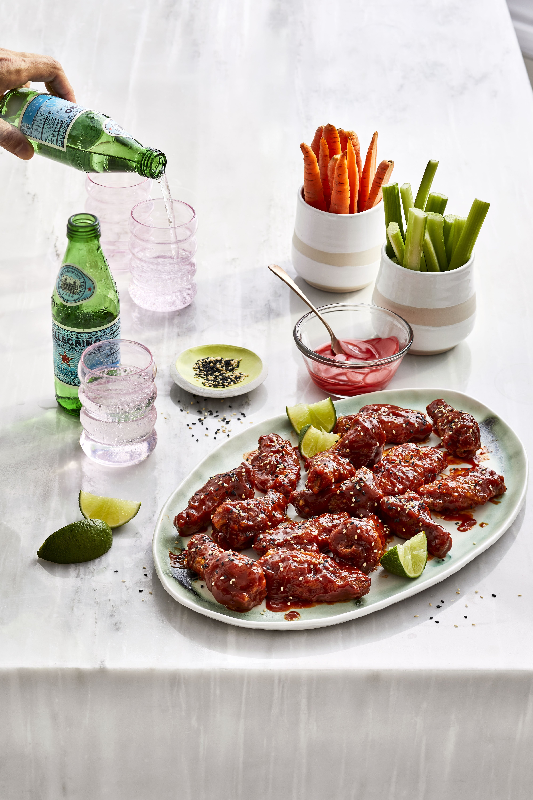

Home
Korean Fried Chicken

Prep: 15 mins
Cook: 35 mins
Total: 50 mins
Servings: 6 person
Yield: 6 Servings
Ingredients
Chicken:
- 3 cups canola oil for frying
- 3 ¾ pounds chicken drumsticks
- 1 tablespoon grated fresh ginger, or more to taste
- 1 teaspoon kosher salt
- 1 cup potato starch, or as needed
Sauce:
- ½ cup gochujang (Korean hot pepper paste)
- ¼ cup oyster sauce
- 3 tablespoons mirin (Japanese sweet wine)
- 2 tablespoons ketchup
- 1 tablespoon fish sauce
- 2 teaspoons grated garlic
- 1 ½ teaspoons white sesame seeds
- 1 ½ teaspoons black sesame seeds
Directions
- Preheat the oven to 200 degrees F (95 degrees C). Set a rack on a foil-lined baking sheet.
- Pour oil into a 10-inch cast iron skillet. Clip a candy thermometer to the side of the skillet. Heat over medium-high heat until oil reaches 375 degrees F (190 degrees C), about 10 minutes
- Meanwhile, toss chicken, ginger, and salt together in a large bowl until evenly coated. Spread 1/2 cup potato starch in a shallow dish; dredge chicken to coat completely and evenly. Add remaining 1/2 cup potato starch as needed. Shake off excess and transfer to a plate.
- Add chicken to the skillet carefully, working in batches; fry until lightly golden, 2 to 3 minutes. Turn chicken over and fry until an instant-read thermometer inserted into the thickest part registers 175 degrees F (80 degrees C), 2 to 3 minutes more. Transfer to the rack on the prepared baking sheet. Reheat oil between batches to 375 degrees F (190 degrees C).
- Return chicken to the skillet in batches and fry again, about 2 minutes per side.
- Stir gochujang, oyster sauce, mirin, ketchup, fish sauce, and garlic together in a large bowl. Add cooked chicken and toss to coat. Sprinkle with white and black sesame seeds.